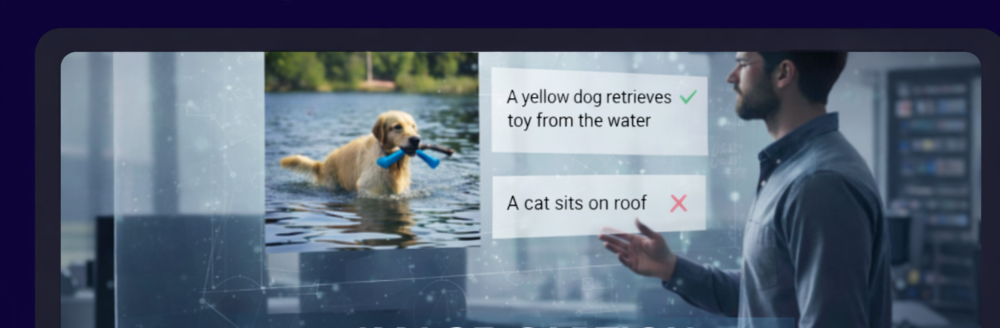
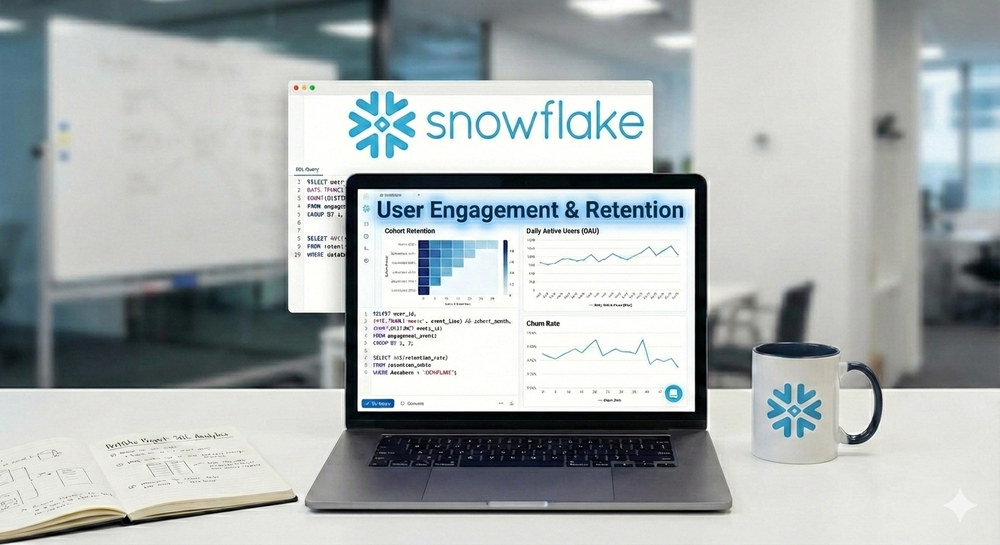
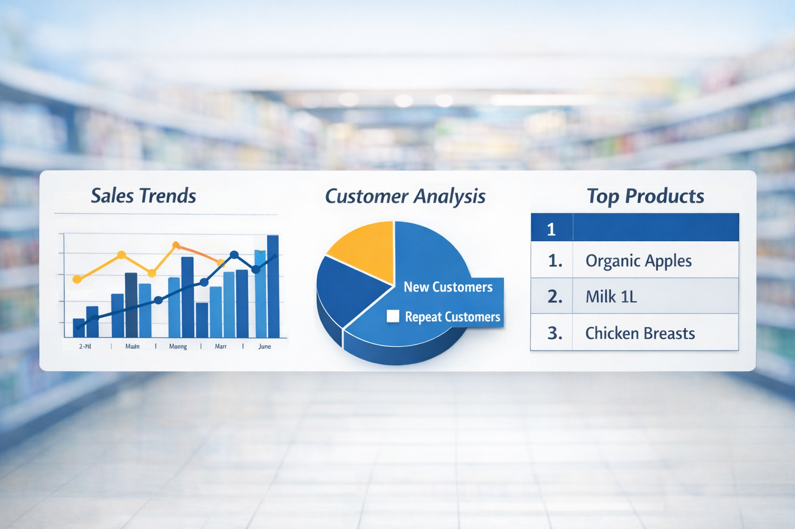
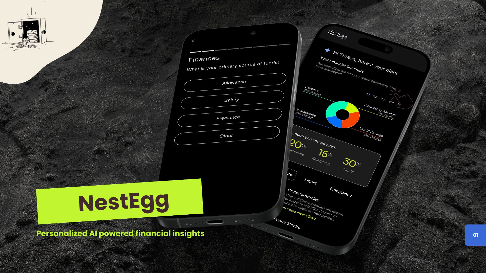

Work Experience
30% clearer match signals
25% fewer ambiguous cases
40% faster reviewer decisions
- Engineered a match strength scoring system combining GPS distance, grower matching, and capture timing signals, improving match clarity for large-scale tree tracking data.
- Defined data-driven thresholds for distance and capture timing, reducing ambiguous match cases and accelerating reviewer decision cycles.
- Designed distance badges and capture history dashboards enabling reviewers to interpret capture relationships faster with significantly less manual lookup.
- Built lightweight analytics pipelines tracking match rates, review time, and spatial patterns, surfacing operational bottlenecks and informing product improvements.
50+ researchers supported
100+ projects evaluated
Standardized analytics workflows
- Designed Python and R analytics workflows supporting graduate research projects across multiple data science domains.
- Evaluated 100+ analytics projects on methodology, statistical validity, and data quality.
- Created visual and tabular summaries helping researchers interpret complex statistical results.
- Collaborated with faculty to translate technical findings into accessible insights for diverse audiences.
10M+ rows analyzed
20% faster reporting
20% faster decision cycles
- Built SQL pipelines processing 10M+ records for pricing evaluation, anomaly detection, and operational analytics.
- Designed and analyzed A/B tests on pricing strategies improving decision confidence across retail operations.
- Developed Tableau dashboards tracking pricing volatility and performance for operations and compliance teams.
- Partnered with cross-functional stakeholders to define business metrics and resolve data inconsistencies.
Millions of listings audited
10% error reduction
20+ team members mentored
- Applied SQL-based analysis to streamline reporting workflows across large retail datasets.
- Conducted large-scale pricing audits identifying systemic data issues across product listings.
- Identified recurring operational patterns and translated insights into process improvements adopted across teams.
- Mentored 20+ team members on analytics tools, audit standards, and data validation practices.
Education
GPA 3.85 / 4.0
Machine Learning
Multimodal AI Research
- Core Areas: Machine Learning, Statistical Modeling, Data Mining, Visual Analytics
- Research Focus: Multimodal learning, comparative ranking models, and image-caption evaluation.
- Academic Role: Graduate Teaching Assistant supporting analytics workflows and research projects.
Projects
Featured Projects
GenAI
HerRestartAI – AI Financial Recovery Assistant
GenAI financial assistant generating personalized recovery plans, budgets, and debt timelines.
Machine Learning

Image–Caption Ranking Model
Multimodal deep learning system for ranking caption quality.
Analytics

User Engagement & Retention Analytics
Snowflake SQL pipeline modeling sessions, funnels, and cohorts.
Other Projects
Machine Learning
Life Insurance Bonus Prediction
Logistic regression and ML for bonus eligibility.
Analytics

Retail Pricing Anomaly Detection
SQL-based anomaly detection on retail pricing data.
AI/ML

AI Budgeting Assistant – NestEgg
NLP-powered personal finance assistant.
Technical Skills
Programming & Querying
Data Science & Machine Learning
Analytics & Visualization
Data Engineering & Systems
Tools & Platforms
Contact
I’m always open to discussing data science roles, research collaborations, or interesting projects.